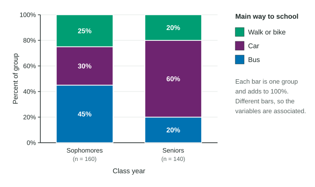
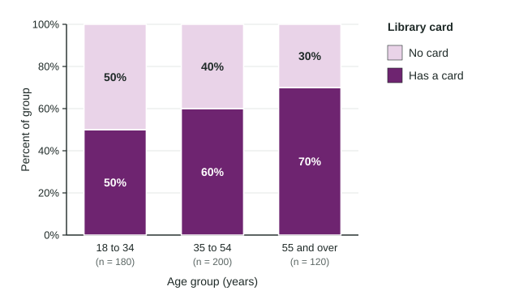

Tabular and Graphical Representations for the Distributions of Two Categorical Variables
A two-way table counts two categorical variables together.
Part 1 · Hook
Why this matters
Part 2 · Before you start
What this builds on
Part 3 · Prerequisite check
Quick check before you start
1. In a sample of 80 students, 20 play an instrument. What is the relative frequency of playing an instrument?
- 0.25
- 0.20
- 20
- 0.80
Show the answer
: the count over the total.
- Correct: 0.25:
- 0.20:
- 20:
- 0.80:
2. Which display is made for a single categorical variable?
- A bar chart
- A histogram
- A boxplot
- A dotplot
Show the answer
A bar chart has one bar per category; the others show quantitative data.
- Correct: A bar chart:
- A histogram:
- A boxplot:
- A dotplot:
Part 4 · See it
See it first

Part 5 · Step by step
How it works, step by step
- Two categorical variables are recorded for each studenta two-way table counts each pairing of categories, with row and column totals
- The groups have different sizes (160 sophomores, 140 seniors)counts cannot be compared directly, so each row is turned into percents of its own total
- Each group's percents become one bar that reaches 100%a segmented bar chart puts the groups side by side on the same scale
- The bars split differently (60% of seniors by car, 30% of sophomores)the variables are associated in these data
Part 6 · Key ideas
Key ideas
- A two-way table shows the counts for each pairing of categories of two categorical variables, with totals.
- Compare groups with percents of each group, never with raw counts when group sizes differ.
- A segmented bar chart has one bar per group, each split into the other variable's categories and reaching 100%. A side-by-side bar chart puts the bars next to each other; a mosaic plot also makes each bar's width show the group's size.
- Two variables are associated when the percents differ from group to group. Equal percents mean no association.
- In a survey, association is not cause and effect.
Part 7 · Misconception
A common mistake
The wrong idea: More seniors than sophomores ride in a car (84 against 48), so the counts show seniors drive more.
What actually happens: The groups differ in size, so compare percents: 60% of seniors and 30% of sophomores. The conclusion holds here, but only percents show it fairly.
Part 8 · Check yourself
Check yourself
Exam-style questions. Anything you miss goes into your review queue.
Table
How sophomores and seniors get to school
| Class year | Bus | Car | Walk or bike | Total |
|---|---|---|---|---|
| Sophomores | 72 | 48 | 40 | 160 |
| Seniors | 28 | 84 | 28 | 140 |
| Total | 100 | 132 | 68 | 300 |
1. What proportion of the sophomores walk or bike to school? Give a decimal.
Type a number. A table answer and a calculator answer are both accepted.
Show the answer
Use only the sophomore row: 40 of the 160 sophomores walk or bike, and .
- Answer: 0.25
2. Which comparison is the right way to judge whether class year and way to school are related?
- The 72 sophomores who ride the bus with the 28 seniors who ride the bus, as counts
- The 100 bus riders in total with the 132 car riders in total
- The number of sophomores, 160, with the number of seniors, 140
- The percent of sophomores who ride the bus with the percent of seniors who do
Show the answer
The groups have different sizes (160 and 140), so compare each group's percents, category by category.
- The 72 sophomores who ride the bus with the 28 seniors who ride the bus, as counts: Counts mislead when the groups differ in size; turn each count into a percent of its own row first.
- The 100 bus riders in total with the 132 car riders in total: Those totals mix both class years together, so they cannot show a difference between the years.
- The number of sophomores, 160, with the number of seniors, 140: That compares the sizes of the two groups, which says nothing about how each group travels.
- Correct: The percent of sophomores who ride the bus with the percent of seniors who do: Right: 45% of sophomores and 20% of seniors ride the bus, a fair comparison of groups of different sizes.
3. Do these data show an association between class year and main way to school?
- Yes: 60% of seniors ride in a car, compared with 30% of sophomores
- No: more sophomores (160) than seniors (140) were in the sample
- Yes: 132 students ride in a car, more than use any other way
- No: the counts of walkers and bikers, 40 and 28, are close to each other
Show the answer
Sophomores: 45% bus, 30% car, 25% walk or bike. Seniors: 20% bus, 60% car, 20% walk or bike. The distributions differ, so the variables are associated in this sample.
- Correct: Yes: 60% of seniors ride in a car, compared with 30% of sophomores: Right: the percents differ clearly between the class years, which is what association means.
- No: more sophomores (160) than seniors (140) were in the sample: Group sizes do not decide association; the percents within each group do.
- Yes: 132 students ride in a car, more than use any other way: That is about all 300 students together. Association is about whether the groups differ.
- No: the counts of walkers and bikers, 40 and 28, are close to each other: Close counts are not the test, and here the percents in other categories differ a lot (45% and 20% for the bus).
Graph
Library cards by age group

4. Which statement is supported by the chart?
- More adults aged 55 and over have a card than adults aged 35 to 54
- Half of the 500 adults in the sample have a library card
- Age and having a card are not associated, since each group has some card holders
- The percent of adults with a card is higher in each older age group
Show the answer
The "Has a card" segment grows from 50% to 60% to 70% across the age groups.
- More adults aged 55 and over have a card than adults aged 35 to 54: In counts, 70% of 120 is 84, less than 60% of 200, which is 120. A taller segment is a larger percent, not a larger count.
- Half of the 500 adults in the sample have a library card: Overall, 294 of 500 have a card, 58.8%. Half is the figure for the youngest group only.
- Age and having a card are not associated, since each group has some card holders: Association means the percents differ between groups, and here they do.
- Correct: The percent of adults with a card is higher in each older age group: Right: 50%, then 60%, then 70%.
5. What proportion of all 500 adults have a library card? Give a decimal.
Type a number. A table answer and a calculator answer are both accepted.
Show the answer
294 of the 500 adults have a card: .
- Answer: 0.588
6. In a company survey, 30% of the 200 morning-shift workers and 30% of the 120 evening-shift workers bike to work. What do these data show?
- An association, because 60 morning workers bike but 36 evening workers do
- An association, because 70% of each shift does not bike
- No association between shift and biking to work in this survey
- Morning workers are more likely to bike than evening workers
Show the answer
The same percent of each group bikes, so in these data shift and biking to work are not associated.
- An association, because 60 morning workers bike but 36 evening workers do: The counts differ only because the groups differ in size; the percents are equal.
- An association, because 70% of each shift does not bike: The same 70% in each group is again no difference between the groups.
- Correct: No association between shift and biking to work in this survey: Right: equal percents in the groups mean no association.
- Morning workers are more likely to bike than evening workers: Each group has the same 30%, so neither is more likely.
Part 9 · Summary
Summary
Part 10 · Up next
What comes next
Part 11 · Connections